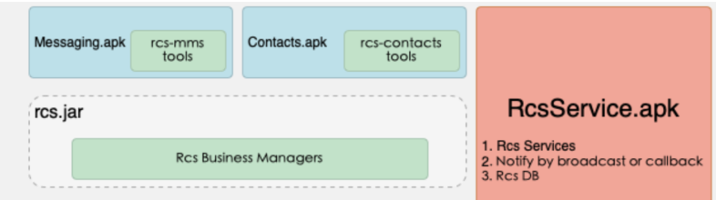
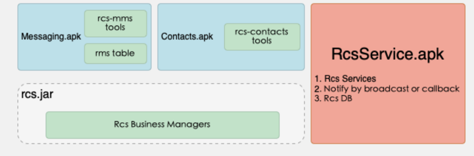
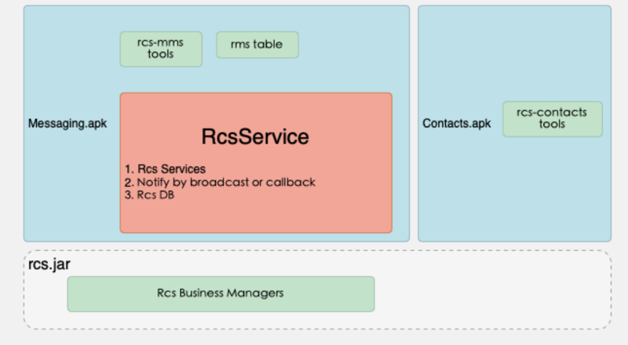
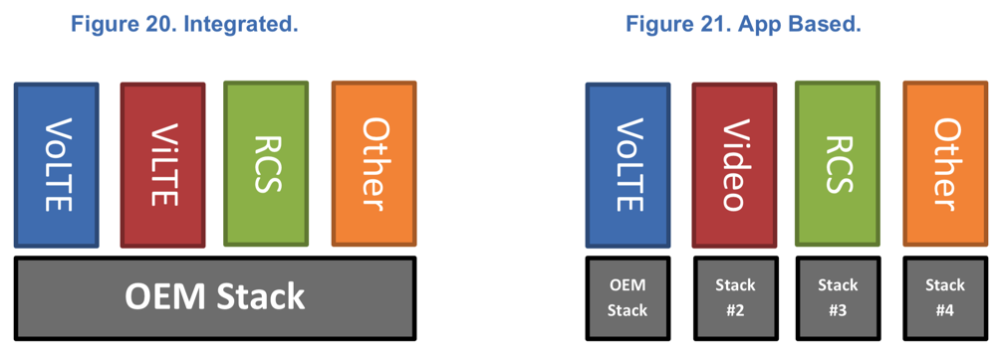

RCS具体实现
关于RCS具体的实现，实施，有多种方式。总结如下：
- RCS Native
- 菊风 三大方案
- 方案一：主要包含
RCSService（RCS服务）；TelephonyProvider（系统短彩数据库）；Messaging/Mms Contacts- 代表性案例：
海信、小米、酷比、天珑 - 架构：
- 
- 细节
- 针对这些手机厂商的方案，牵扯到了系统应用，菊风在其系统上增加
RCSService.apk - 改造原短彩信的数据库，升级
MaaP需整个系统升级即可实现 - 但由于
service.apk是系统级应用保证常驻，能够长时间保留信息 - 改动短信应用会在系统上增加
RCSService.apk，修改系统短信的数据库
- 针对这些手机厂商的方案，牵扯到了系统应用，菊风在其系统上增加
- 代表性案例：
- 方案二：针对不想修改
TelephonyProvider源码的用户，在该场景下RCSService不处理任何数据库操作，上层可以在收到广播后进行数据的存储- 代表性案例：
联想、360 - 架构
- 
- 细节
- 菊风为联想、360提供的
RCS Native解决方案并不改造系统数据库，只需添加service.apk，再改造短信应用即可完成
- 菊风为联想、360提供的
- 代表性案例：
- 方案三：一般是在方案2的基础上将
RCSService代码打成aar包供上层直接集成，确保集成该aar应用存放在system/priv‒app/下- 代表性案例：
OPPO、魅族 - 架构
- 
- 细节
- 菊风为 OPPO 和魅族提供sdk助其短信集成，不会修改系统中的其他任何应用，包括数据库、服务增加等；用户只需升级短信应用即可提供 MaaP 的相应能力，魅族本身短信应用快速升级十分方便，升级代价最小；只改动短信应用
- 代表性案例：
- 方案一：主要包含
- 菊风 三大方案
- RCS消息
- 美国
- 
- 美国